Simulated unmetered batteries above 10% to 20% of peak flow are found; real ones mostly not
Bottom line: estimating the size of an unmetered battery from substation data mostly fails today. Better models of demand and generation should help detection. They would not fix sizing unless the real battery's behaviour is also modelled. We have not tested this.
This study asks whether the half-hourly electricity flow of a primary substation can reveal the power in megawatts (MW) and the energy capacity in megawatt-hours (MWh) of a battery that nobody meters. National Grid Electricity Distribution (NGED) needs that answer for the storage behind its substations. An estimator assumes that a battery follows a daily schedule set by public signals (the day-ahead electricity price, a half-hourly retail price, or the fixed windows of home-battery tariffs): it charges at the cheap times and discharges at the dear ones. The estimator tries many battery sizes, keeps the sizes whose schedule makes the flow match the measured flow, and reports a probability distribution (the posterior) for the battery's power and energy. The page tests the estimator on simulated batteries with a known answer, and then on real batteries. All numbers in the Summary are provisional until the remaining reviews finish.
The Summary uses these terms.
- Primary, bulk supply point, and grid supply point. A primary is a substation that steps voltage down for local distribution. A bulk supply point and a grid supply point are larger substations above the primaries. The study labels the series S1 to S8, BSP1, BSP2, and GSP1. Rungs 1 to 4 use 9 series (7 primaries, S4 excluded, BSP2, and GSP1), and the screen of the primaries uses all 8 primaries, S4 included. The labels are the study's own, not NGED's names.
- Flow series and sum. A flow series is one substation's half-hourly flow. A sum is one battery (simulated or real) added to one flow series in one 3-month block, which the estimator then fits.
- Peak flow and share. Peak flow is a series' 99th-percentile flow, the flow exceeded in 1% of half-hours. A battery's share is its power as a percentage of the peak flow.
-
Detection score and flagged. The detection score is a log Bayes factor: the log of how many times better the flow fits with a battery than without one, after a penalty for the battery's extra fitted quantities (power, usable energy, and efficiency). A block is flagged when its detection score is higher than in 95% of the blocks of the other series that have no battery. The penalty makes a block with no battery score below zero, because the fit with a battery then gains little and pays the penalty. A score counts as big when it beats the threshold, which is the 95th percentile of the scores of no-battery blocks (-2.5 to -3.6). Flagged therefore means "scores higher than almost all batteryless blocks" and not "has positive evidence of a battery".
-
Can a simulated battery of known dispatch be found, and from what size? Yes if it follows the rule the estimator assumes, from a 10% share (58% of sums flagged) to a 20% share (94%) (provisional).
- What was tested. A merchant battery charges when the day-ahead price is low and discharges when it is high. The study added 756 simulated merchant batteries to 9 NGED flow series (7 primaries, 1 bulk supply point, and 1 grid supply point), each in four 3-month blocks. In-family means the battery follows exactly the dispatch rule that the estimator assumes.
- The result (provisional). In-family batteries were flagged in 18% of sums at a 5% share, 58% at 10%, 94% at 20%, and 100% at 40%.
- The baseline (provisional). The threshold targets a false-alarm rate of 5%. With no battery added, 3 of 36 blocks (8.3%, 95% interval 1.8% to 22.5%) were flagged, all of them one series (GSP1). Every rate above therefore includes that 8.3%, which is the false-alarm baseline for all 9 series. Without GSP1 the same thresholds flagged 0 of 32 no-battery blocks.
- Other dispatch rules are found less often (provisional). A battery that charges in each day's cheapest half-hours and discharges in the dearest was flagged in 44% of sums at a 10% share and 83% at 20%. A battery that follows a noisy copy of the price was flagged in 8% at 10% and 52% at 40%.
- Can a real battery added to NGED flows be found? Mostly no (provisional).
- What was tested. The study took the metered output of 23 real public batteries and fleets (from Elexon), scaled each to shares of 5% to 40%, and added it to the same 9 series: 3,312 sums. The 23 are 8 single batteries and 15 fleets of 2, 4, or 8 batteries.
- The result (provisional). Without GSP1 (whose false alarms would inflate the rates), 0 of 736 sums were flagged at shares of 5% and 10%, 1 of 736 at 20%, and 50 of 736 (6.8%, 95% interval 5.1% to 8.9%) at 40%. The baseline without GSP1 is 0 of 32 no-battery blocks, so no baseline needs subtracting, and 6.8% at 40% is above that baseline. It counts as a weak detection at the largest share, and not as a size or as proof, because the target false-alarm rate is 5% and the measured rate with GSP1 is 8.3%.
- One real battery in a real flow (provisional). NGED battery A, a battery that NGED meters, was put back into the flow of the bulk supply point it connects to, at up to 11 times its metered output (as metered it is 3.2% of that flow's peak flow, and at 11 times 35.5%): 0 of 20 blocks were flagged.
- Demand the estimator cannot explain hides batteries (provisional). A calendar replica is a series rebuilt as the mean of its own month, half-hour of the day, and day type, so it keeps the daily and seasonal shape and almost none of the random noise. On replicas of all 9 series, the real public batteries were flagged in 71% of sums at a 10% share and 84% at 40%, against a threshold built from the replicas' own no-battery blocks. On the real flows (without GSP1) the same batteries were flagged in 0% and 6.8%.
- Two limits on that point (provisional). A replica has an artificially perfect demand model, so 71% and 84% are an upper bound and not a forecast of what a realistic demand model would give. The study did not test a realistic demand model. Better demand modelling alone would not fix sizing either: on the replicas the power is still sized at about 6% of the registered power, because real dispatch differs from the assumed schedule.
- Can a battery's MW and MWh be estimated, and how reliable are the intervals? Not for real
batteries (provisional).
- What was tested. The 90% interval for power from every sum above. Interval coverage is the share of intervals that hold the true value: a 90% interval should hold the true value 90% of the time. Holding it more often means the interval is too wide, and less often means it is too narrow.
- In-family batteries (provisional). The 90% power interval held the true power in 100% of sums at shares of 5% to 20% and 99% at 40%. Pooled over simulated merchant batteries and simulated home-battery fleets, which enter here and whose intervals mostly miss (0% to 36% of sums), it held the true power in 68.9% of sums, short of the 80% that planned contrast C2 required in the study plan. Merchant batteries alone held it in 90% of sums over all seven shares, and in 99% to 100% at shares of 5% to 40%.
- Other dispatch rules (provisional). At 10%, 20%, and 40% shares the 90% power interval held the truth in 90%, 60%, and 26% of sums for the cheapest-and-dearest rule, and in 65%, 33%, and 6% for the noisy price. The median absolute power error was about 30% for the cheapest-and-dearest rule and 61% to 76% for the noisy price.
- Real batteries (provisional). At a 40% share the 90% power interval held the truth in 6% of sums. The power estimate rose from 2.6% of peak flow with no battery to 4.1% with a 40% battery.
- Small batteries (provisional). The estimator reports about 2.6% of peak flow with no battery at all, a bias. Below a 2% share the estimate is 2.8% to 3.2%, no different from the estimate with no battery. A small reported MW is therefore the bias, not a battery.
- Can the screen of the eight primaries say any primary holds a battery? No (provisional).
- What was tested. The screen tests whether the real tariff-and-price templates (the schedules a battery would follow) fit a primary better than 12 control copies of the same templates with the tariff windows moved by 1 to 3 hours or the prices taken from another week. A copy with the wrong times should fit no better if no battery follows the real times.
- The result (provisional). The real templates ranked first for none of the eight primaries. The screen cannot tell a battery from none. A lane is one series with its four blocks added together. A lane with a simulated battery ranked the real templates first in 1 of 54 lanes (1.9%). A template is the schedule the battery is assumed to follow, and a control copy is that schedule moved to the wrong times. With 13 sets in all (the real one and 12 copies), a screen with no information would rank the real set first in 1 of 13 lanes (7.7%).
- A price-only version (provisional). Restricted to price-shifted copies, a screen added after the study's first scientific review ranked the real templates first in 53 of 54 simulated lanes, 30 of 36 real-battery lanes at a 40% share, and 0 of 9 lanes with no battery (95% interval 0% to 34%). By the price-only screen, no primary ranks first. That means the screen found no sign of a battery, which is not the same as showing that no primary holds one.
- Does fitting the battery by gradient descent on a graphics card beat a grid search over battery
sizes? Its intervals hold the truth far more often, but its medians are no more accurate
(provisional).
- What was tested. The study has two estimators. The differentiable estimator adjusts a battery's power, usable duration, and efficiency continuously by gradient descent on a graphics processing unit (GPU). The grid search tries a fixed grid of durations and efficiencies. Both fitted the same 756 in-family sums.
- Coverage (provisional). At a 40% share the 90% power interval held the truth in 99% of sums for the differentiable estimator and 11% for the grid search.
- Accuracy (provisional). The differentiable estimator's absolute relative power error was 0.04 higher on average than the grid search's (95% interval -0.03 to +0.14), where 0.04 means 4% of the true power, so its medians are no more accurate.
- What the methods can and cannot support. The methods support saying that a battery that follows the assumed rule is detectable from a share of 10% of peak flow (58% of sums flagged), and that for such a battery at shares of 5% to 40% the 90% power interval holds the true power slightly more often than 90%. They do not support sizing a real battery, or saying that a primary holds no battery: the study covers 9 series from one year, the thresholds rest on 36 no-battery blocks, and one series (GSP1) false-alarms in every comparison.
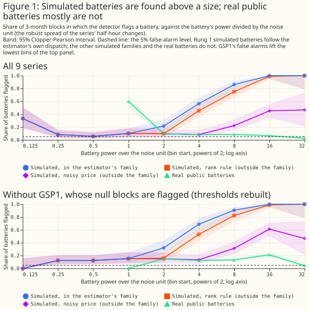
- What to use this for: reading a detection. A detection of a battery in a primary's flow means that a battery or a load follows the day-ahead price, and does not give a size. It was reliable only for simulated batteries at a share of 10% to 20% of peak flow or more, and most reliably when the battery's dispatch resembles the dispatch the estimator assumes (provisional).
- What to use this for: planning. For a real battery, planning should rely on connection records and metering. NGED's Embedded Capacity Register omits storage below 50 kilowatts (kW) and gives no MWh, so planning should treat unregistered batteries as uncertainty near the evening peak and at the edges of the tariff windows. A longer record, a battery-free reference series, or a known battery inside a primary would change this advice.
- What to use this for: demand modelling. Demand that the estimator cannot explain hides real batteries: on calendar replicas 71% and 84% of real-battery sums were flagged at 10% and 40% shares, against 0% and 6.8% on real flows (provisional). A better demand model is worth trying for detection, but the 71% and 84% are an upper bound from a perfect demand model, the study did not test a realistic one, and sizing would still be off (about 6% of registered power).
- What to use this for: intervals. No MW or MWh interval for a real battery should be published from this estimator: the 90% power interval held the truth in 26% of sums for the cheapest-and-dearest rule at a 40% share, and in 6% for real public batteries (provisional).
How this page was made. The research question came from a human. Everything else — the code behind every result, the analysis, the figures, and the text — was written by Claude, Anthropic's AI model (for this page, Claude Sonnet 5.5). Two independent Claude reviewers have checked the design and the results adversarially, and a third has reviewed the code; the prose and persona reviews are still to come, as the Limitations say.
Key findings
- The positive control passes its pre-set rule, but its intervals are too narrow on calendar replicas (Figure 10).
- The posterior beats a model-free step statistic for power and for energy, for in-family batteries only (Figure 12).
- A simulated domestic fleet is found only through its homes on the Agile tariff (Figure 14).
- Planned contrast C5 passes, but the pass is no evidence that a fleet is identified as its coincident peak (Figure 15).
- The estimator reports about 2.6% of peak flow where no battery exists (Figure 12).
- A second setting, with wider priors, gives the same verdicts (the second setting).
Introduction
NGED needs to know how much storage sits behind its primaries, and no meter reports that storage for homes and small businesses. NGED's Embedded Capacity Register lists storage of 50 kW and above with no energy capacity in MWh, and is silent below 50 kW. The battery and solar study showed why the half-hourly flow is hard to use: a battery schedule that is free to take any shape absorbs demand noise as readily as a real battery's swings, so its residual falls by the same amount for real output and for calendar replicas with no battery. This study therefore gives the battery no free shape. Each battery's schedule is simulated from a public signal, and only the power, usable duration, and efficiency are fitted.
Frequency excursions are too rare to move half-hourly means, so grid frequency is not used as a signal. In the Elexon data for September 2025 to August 2026 the half-hourly minimum frequency fell below 49.7 Hz in 6 half-hours on 4 days, after 188 faulty readings of exactly 0 Hz are dropped. Batteries in frequency services may also follow 4-hour availability blocks that the estimator does not model. The 4-hour pattern is a hypothesis, not a finding: the study did not check the pattern in any battery's output.
Data and methods
The study year is September 2025 to August 2026, split into four 3-month blocks. The 9 demand-like series are 7 NGED primaries metered in MW (labelled S1 to S3 and S5 to S8), 1 bulk supply point (BSP2), and 1 grid supply point (GSP1). The primary S4 is a net exporter at the median, so S4's flow is not demand-like and rungs 1 to 4 leave S4 out. The screen of rung 5 includes S4, so the screen covers eight primaries. BSP1 appears only in rung 4. A primary metered in MVA is out of scope, because MVA (megavolt-amperes) has no sign. NGED labels its primary series "Disaggregated Demand", and its definition of that label is unverified. A series with embedded generation added back would change what the solar columns mean.
The five tests, from simulated to real batteries
The study is a ladder of five rungs, and each rung makes the truth harder to match with the estimator's assumptions. Later sections refer to the rungs by number.
- Rung 1: a simulated merchant battery that follows the day-ahead price in the estimator's own way (the in-family best case), added to each demand-like series at seven shares from 0.5% to 40% of its 99th-percentile flow. Rung 1b uses two simulated dispatch rules from outside that family.
- Rung 2: a simulated fleet of home batteries on the four tariffs.
- Rung 3: 23 real public batteries and fleets, added to the series: 8 single batteries (4 named, and the 4 with the smallest registered power that were present in at least 95% of half-hours) and 15 fleets of 2, 4, or 8 batteries (5 of each size). The five kinds of unit are the named batteries, the smallest batteries, and the fleets of 2, 4, and 8.
- Rung 4: NGED battery A inside the flow of the bulk supply point BSP1 at multiples 0, 1, 2, 4, and 11 of its metered output. Multiple 0 adds the battery's metered output back to the metered flow, which cancels the battery's own effect, as a matched null, and multiple 1 is the flow as metered.
- Rung 5: the eight primaries as they are.
Battery sizes are shares of a series' 99th-percentile flow, and the noise unit makes them
comparable. The residual is what is left of a series' flow after the fitted baseline and solar
are removed. The noise unit is sigma_step, the robust standard deviation of the half-hour changes
of that residual with no battery, in MW: the size of a typical random half-hour jump. A battery's
power divided by sigma_step says how many such jumps it is worth, which is how large it is
against the noise of the series it sits in.
A planned contrast was written into the plan before any result existed, and every other number is exploratory. The five planned contrasts are C1 (false alarms), C2 (calibration: do intervals hold the truth as often as they claim), C3 (the posterior against a step statistic, a model-free estimate of power from the largest half-hour jumps in the residual), C4 (energy estimated separately from power), and C5 (whether the estimate for a fleet of real batteries is closer to its coincident peak, the largest summed output of the fleet in any half-hour, than to its registered power, the sum of the capacities the batteries are registered with). A cluster bootstrap puts intervals on the mean errors, and the Clopper-Pearson intervals on rates are too narrow. A cluster bootstrap (2,000 resamples) puts an interval on the mean errors of C3, C4, and C5 and on the grid-estimator difference by redrawing whole demand series and whole batteries, so that sums from one series stay together. A Clopper-Pearson interval is an exact 95% interval for a rate such as 18 flagged in 100. Every rate and coverage carries a Clopper-Pearson interval, computed on sums. Those intervals treat sums as independent, but sums share series and blocks (the 108 sums at one share of rung 1 are 3 durations on the same 36 series-blocks), so they are too narrow. These intervals do not cover the month-to-month weather, so a detection rate is read per block and per season. Analyses written after results existed are marked post hoc, and the page does not correct for multiple comparisons. A post hoc analysis was written after results on the same series existed; the sections for rung 1b, the calendar-replica rung 3, the price-only screen, the season split, the rates without GSP1 or without S2 and S6, and the clean positive control's rule are post hoc, and each says so. An exploratory comparison with no real effect has a nominal 5% chance of being statistically significant at the 5% level. The number of exploratory comparisons with no real effect is unknown. The page does not correct for multiple comparisons.
How the estimator works
The estimator describes the primary's flow as a baseline, solar, and a few batteries whose schedules follow public signals. Three signals schedule the batteries, and a baseline absorbs the rest:
- A merchant battery follows the N2EX day-ahead price, through a day-by-day linear programme (an optimisation of charge and discharge against the price, with a state-of-charge limit and a cap of 1 or 2 cycles a day).
- A home-battery fleet follows fixed tariff windows (Intelligent Octopus Go 23:30 to 05:30, Octopus Go 00:30 to 05:30, and Octopus Flux with cheap import 02:00 to 05:00 and high export 16:00 to 19:00) or the Octopus Agile half-hourly price for the East Midlands.
- A commercial and industrial battery discharges across the weekday red band (16:00 to 19:00, when distribution charges are highest), an assumption not checked against NGED's charging statement.
- A baseline of one daily profile per month and four solar fleet curves absorbs the demand that the batteries and solar do not explain.
The estimator reports, for each class, a probability distribution for the power, the usable energy, and the round-trip efficiency. Figure 2 follows one simulated sum from its inputs to the posterior, and then repeats the last two steps for a real public battery.
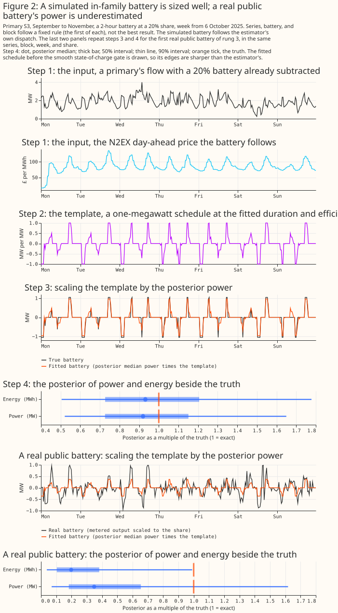
The battery is differentiable, so a graphics card fits a sum in 1 to 2 seconds. The estimator
reads each price-taking battery's schedule between precomputed linear-programme schedules (3,800 of
them for the merchant battery, called the stack) and passes the schedule through a smooth
state-of-charge recurrence. It then fits the power, duration, efficiency, and cycle-cap weight (the
mix of a cap of 1 and a cap of 2 charge cycles a day) by gradient descent (the PyTorch optional
gpu dependency group of packages/studies, with a fused Triton kernel for the recurrence),
polishes the fit, and approximates the posterior around the optimum (a Laplace approximation). The
three starts of the gradient descent agree in all but 2 of 5,868 sums with an interval. Tempering
the likelihood by the residual's autocorrelation widens every interval. The likelihood is raised
to the power 1 / tau, where tau is the integrated autocorrelation time of the residual, roughly
the number of consecutive half-hours that carry one half-hour's worth of information. Neighbouring
half-hours are correlated, so the data hold less information than their count suggests, and this
tempering widens every interval to match. The differentiable estimator fitted rung 1's 792 sums,
including its 36 with no battery, in 1,554 seconds and rung 3's 3,312 sums in 7,392 seconds on one
RTX A6000 shared with one or two other fits.
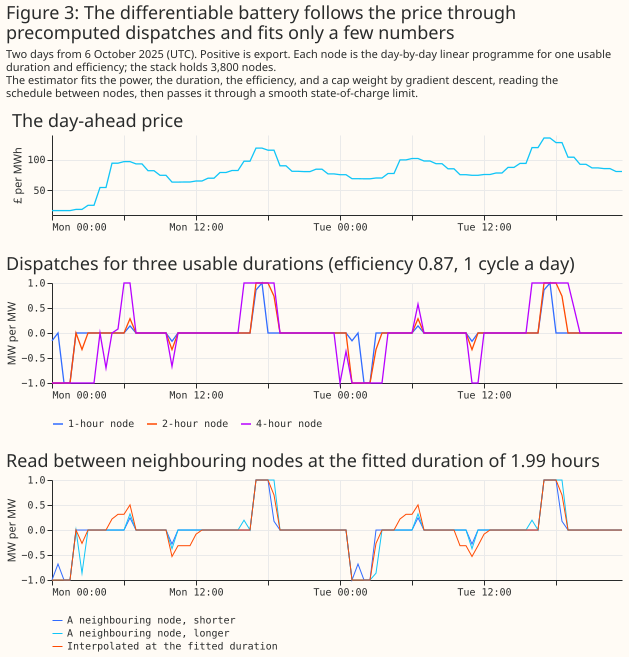
A detection is a detection score above a threshold. The statistic compares the Laplace evidence
of the statistical model with batteries against the statistical model with none. Both evidences are
tempered by the same factor 1 / tau, with tau taken from the model with batteries, so the
statistic does not change with the unit of power. The threshold for a series is the 95th percentile
of the other 8 series' statistics on blocks with no added battery, so no series sets its own
threshold. The statistic is calibrated only empirically, against 36 null blocks from one year.
A coverage plot says whether an interval means what it says. Figure 4 shows how to read a coverage plot.
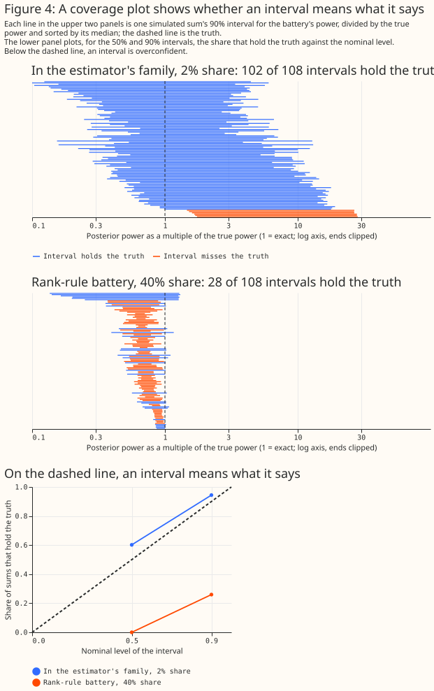
A positive control checks that the estimator can succeed where success is possible, and its pass rule was fixed before its run. The control adds 10 simulated merchant batteries, with durations and efficiencies between those of the precomputed schedules, at a 40% share to calendar replicas of 7 series in all 4 blocks (280 fits). The rule: the 90% interval must hold both the true power and the true energy in at least two thirds of the 280 fits (187).
What the data looks like
The primaries differ in level, noise, and daily shape. Figure 5 shows two weeks of each primary, and Figure 6 shows the mean daily profile and the mean half-hour change. Primaries are substations, so they are shown in MW under their study labels.
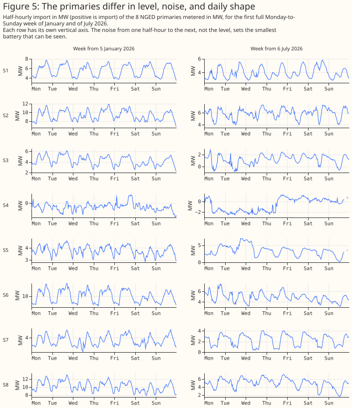
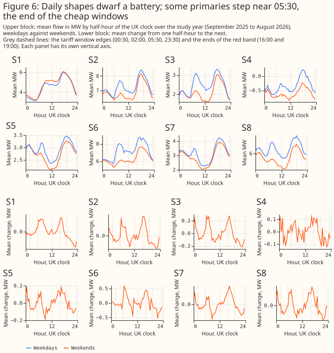
The two prices share a daily shape, and Agile's cheap slots move from day to day.
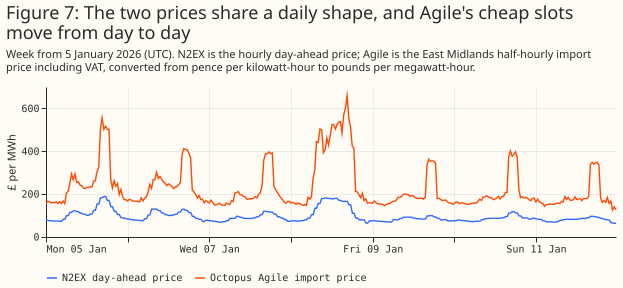
A real battery of a few percent of a bulk supply point's flow is hard to see by eye. As metered, NGED battery A's 99th-percentile output is 3.2% of BSP1's 99th-percentile flow. The half-hour changes of NGED battery A correlate at -0.29 with BSP1's flow over the study year, and at 0.07 or less with every primary and the other supply points. A correlation of -0.29 against 0.07 or less elsewhere singles out BSP1, so the pattern fits a connection to BSP1. The correlation is an indication, not a connection record. Figure 8 normalises both series by their own 99th percentile and numbers the days.
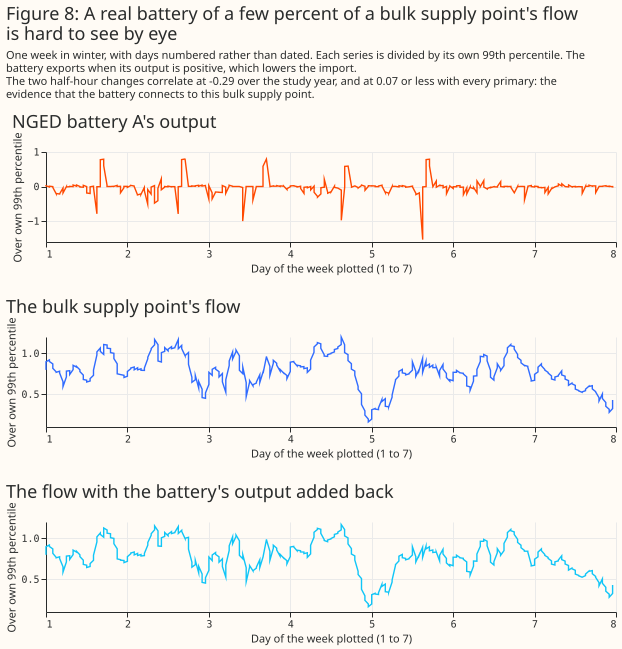
A simulated battery is visible by eye at a 40% share and invisible at 2%.
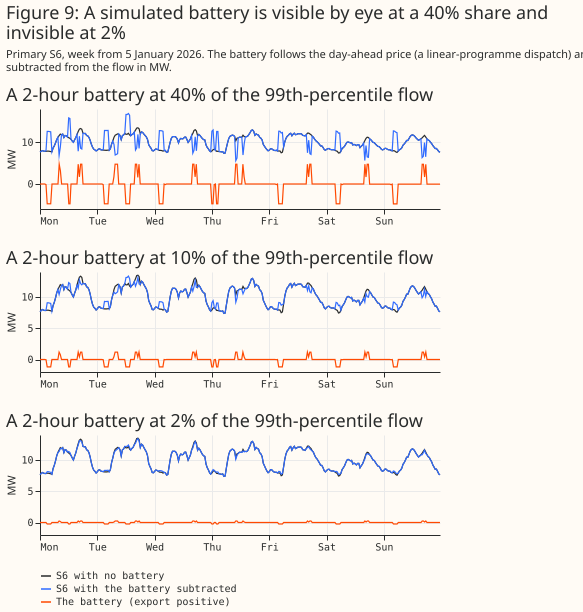
Results
The positive control passes its pre-set rule, but its intervals are too narrow on calendar replicas
The positive control passes the rule committed before its run, but its intervals fall short of their nominal level on calendar replicas. The 90% interval holds both the merchant power and the merchant energy in 202 of 280 replica fits (72.1%), against the 187 the rule required. The 10 simulated batteries are fresh draws, with durations and efficiencies between those of the precomputed schedules, on 7 series no earlier diagnostic touched, in all 4 blocks, at a 40% share. On the replicas the 90% power interval holds the truth in 77.9% of fits and the energy interval in 74.3%. Coverage varies by truth: both intervals hold in 39% of the fits of the worst of the 10 batteries and in 93% of the best, and in December to February the power interval holds in 60.0% of fits. The median absolute power error is 0.36%. The rule is lenient for a nominal 90% interval, because two independent 90% intervals hold both truths in 81% of fits.
On real demand the same truths are covered in 280 of 280 fits, because the tempering widens the intervals. The 90% power interval's width is 10% to 107% of the true power (median 31%). The median power estimate is 2.2% low, and 18.2% low on GSP1. The truths are dispatched by the same linear programme that the estimator interpolates, at a 40% share only, with usable durations of 1.65 to 1.94 hours. The control therefore tests the interpolation between precomputed schedules, and does not test the estimator on a real dispatch. The rule was written after an earlier control had been tuned and scored on the same series, so the rule is post hoc. The control replaces that earlier control, which the Limitations describe.
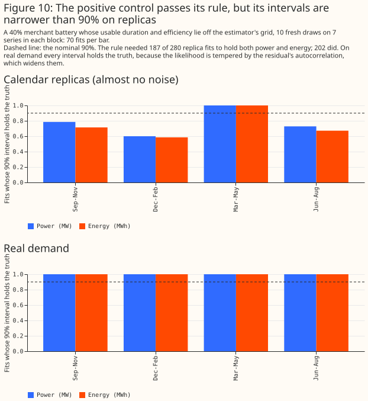
With no battery added, 3 of 36 blocks are flagged, all for one series
The false-alarm rate is 8.3% against a nominal 5%, and all three false alarms are GSP1's, in September to November, December to February, and March to May. Planned contrast C1 holds: a one-sided exact binomial test against 5% gives p = 0.268. The test rejects only at 5 or more flags in 36 blocks (p = 0.032), and 4 flags (11.1%) give p = 0.104. GSP1's no-battery scores sit just above the threshold set by the other series, so GSP1's false alarms inflate every detection rate. GSP1's null log Bayes factors (-2.1, -2.1, -3.2, and -4.1 in the four blocks) lie just above the threshold built from the other 8 series (-3.2), and GSP1's baseline of false alarms therefore sits in every detection rate below, including the rates at the smallest shares. Rebuilding the thresholds without GSP1 flags 4 of the other 32 null blocks (12.5%), in S3 and S2, so the threshold's false-alarm rate is uncertain by several percentage points with 36 null blocks. The thresholds range from -2.5 to -3.6.
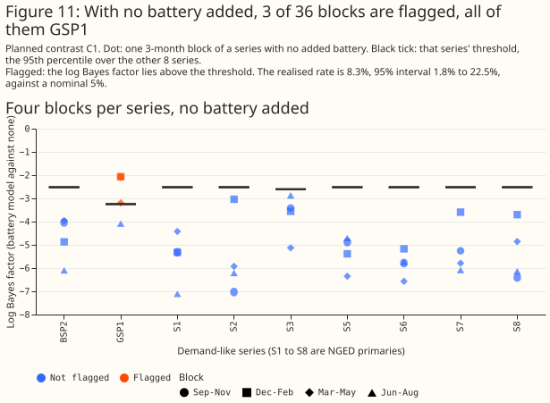
For a battery following the estimator's own rule, the 90% power interval holds the true power from a 5% share
For a simulated merchant battery that follows the estimator's own dispatch rule, the 90% power interval holds the truth in 100% of sums at shares of 5% to 20%, and the posterior beats a step statistic. The 50% interval, which should hold the truth in 50% of sums, holds it in 90%, 91%, and 87% of sums at shares of 5%, 10%, and 20%, so it is too wide there. Planned contrast C2 fails when pooled over rungs 1 and 2: the 90% interval holds the power in 68.9% of sums (at least 80% was required). The pooled figure hides the spread by rung and share. Below a 2% share the estimator reports its own bias, about 2.6% of peak flow, and not a battery. Below a 2% share the posterior is the same as with no battery: its median sits at 2.8% to 3.2% of the 99th percentile at shares of 0.5% to 2%, against 2.6% with none (the prior's median is 13.5%). The estimator therefore has a bias: it reports a merchant battery of about 2.6% of the 99th-percentile flow where none exists, so a small reported power near that value is the bias and not a battery. The posterior beats the step statistic for power and for energy, for in-family batteries only. Planned contrasts C3 and C4 hold in the family: the mean difference in relative power error (the error as a fraction of the true power; posterior minus step statistic) is -0.39 (95% interval -0.45 to -0.33), and in relative energy error (posterior minus a rule of 2 hours times the power) -0.61 (-0.77 to -0.46). Both are statistically significant at the 5% level, for in-family batteries only. The summed flow pins down the duration: the 90% width of the duration is 0.29 to 0.35 of its prior width at a 10% share, and 0.08 to 0.09 at 40%.
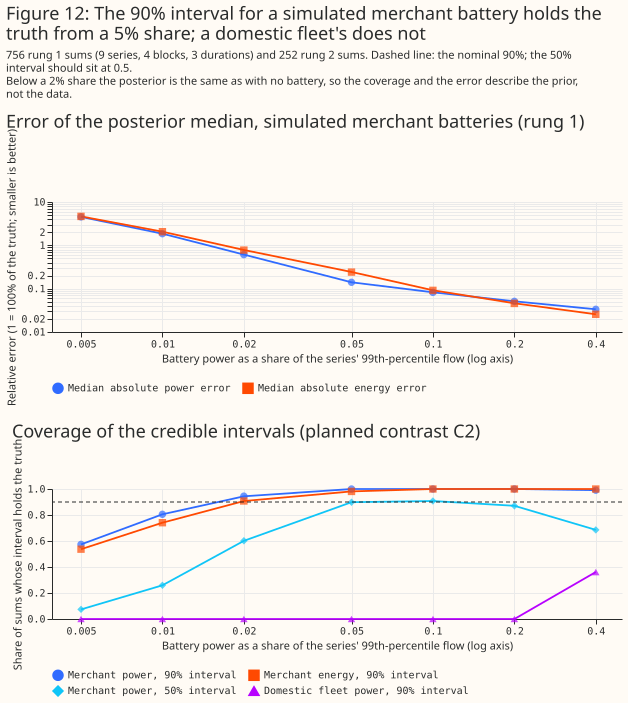
Batteries following other dispatch rules are found less often and sized wrongly
The rank-rule battery is flagged about as often as an in-family battery, the noisy-price battery far less often, and both are sized wrongly. This analysis is post hoc: it was added after the first science review. The rank rule charges in each day's cheapest and discharges in its dearest half-hours. The noisy price adds independent noise of standard deviation 0.2 to the price before the dispatch. The rank rule is flagged in 44%, 83%, and 100% of sums at shares of 10%, 20%, and 40%. Its 90% power interval holds the truth in only 90%, 60%, and 26%, and its median absolute power error stays near 30%. The noisy price is flagged in 8%, 24%, and 52%, with 90% intervals holding the truth in 65%, 33%, and 6%, and a median absolute power error of 61% to 76%. At least half of the in-family sums are flagged from a battery of 4 noise units, the rank-rule sums from 8, and the noisy-price sums at no size we tested. Without GSP1 the three families reach half at 4, 4, and 16 noise units.
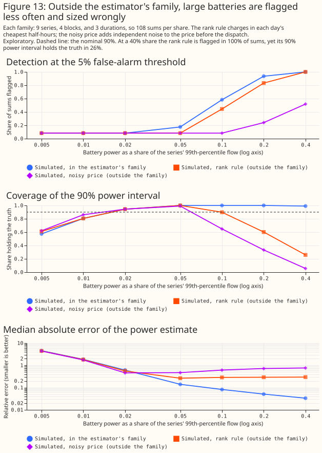
A simulated domestic fleet is found only through its homes on the Agile tariff
The fixed tariff windows are not identifiable, because the monthly baseline absorbs a schedule that repeats every day. Detections of a simulated fleet come from the Agile unit, whose schedule follows a price that changes daily. The fleet is flagged in 31% of sums at a 20% share and 75% at 40%, and in 8% (GSP1's false alarms) at shares of 10% and below. Moving the windows one hour early lowers the flags from 11 to 7 of 36 at a 20% share and from 27 to 25 at 40%, and moving the prices as well brings the flags to 2 of 36 at every share. The fitted power of each of the three fixed-window classes sits at 79% to 95% of the scale of its prior (20% of the 99th-percentile flow), and not at zero, so a fleet's summed power is the prior's scale. The Agile class's own 90% interval holds its simulated homes' rated power in 94% to 100% of sums at shares of 10% and above, so the Agile class is both detected and sized. The 90% interval of the whole fleet's power holds the truth in 0% to 36% of sums (planned contrast C2 for fleets fails), because the fixed-window classes add the prior's power to the sum.
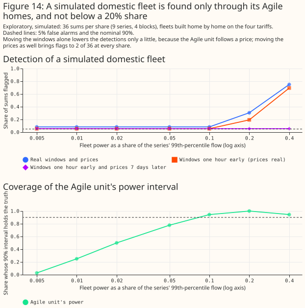
Real public batteries added to NGED flows are mostly not detected or sized
Adding a real public battery to a primary barely moves the estimate, and flags it only at the largest share. The posterior median of the merchant power, as a share of the series' 99th-percentile flow, is 2.7%, 2.8%, 3.2%, and 4.1% with a real battery of 5%, 10%, 20%, and 40%, against 2.6% with none. GSP1 is flagged in all 69 of its sums in the three blocks where it false-alarms (23 batteries and fleets times 3 blocks), at every share, which is the false-alarm baseline shown in Figure 11. Without GSP1, 0 of 736 sums are flagged at shares of 5% and 10%, 1 of 736 at 20%, and 50 of 736 (6.8%, 95% interval 5.1% to 8.9%) at 40%, of which 24 of 184 (13%) fall in June to August. These intervals treat sums as independent, but the 23 batteries and fleets share 36 series-blocks at each share, so they are too narrow. The coverage is set by the series and block, not by the battery. The 90% power interval holds the truth in the same 6% of sums at a 40% share for each of the five kinds of real battery or fleet. The series and block, not the battery, therefore set the coverage.
On calendar replicas the real batteries are flagged, but sized at about 6% of their registered power. This section is post hoc: it was added after the first science review. On replicas, with a threshold from the replicas' own 36 no-battery blocks, 71% of sums are flagged at a 10% share and 84% at 40%, and the median log Bayes factor rises from -13.5 with none to -5.9 and +4.6. The posterior median stays at 6.3% and 6.1% of the registered power. Demand noise therefore hides a real battery from detection. A dispatch outside the estimator's family prevents the sizing: the day-ahead component that the estimator models is about 6% of the real batteries' registered power.
Planned contrast C5 passes, but the pass is no evidence that a fleet is identified as its coincident peak. The contrast is degenerate: the posterior median lies below the coincident peak in 82.1% of the 2,160 fleet sums and below the registered sum in 92.9%, so its pass is no evidence that a fleet is identified as its coincident peak.
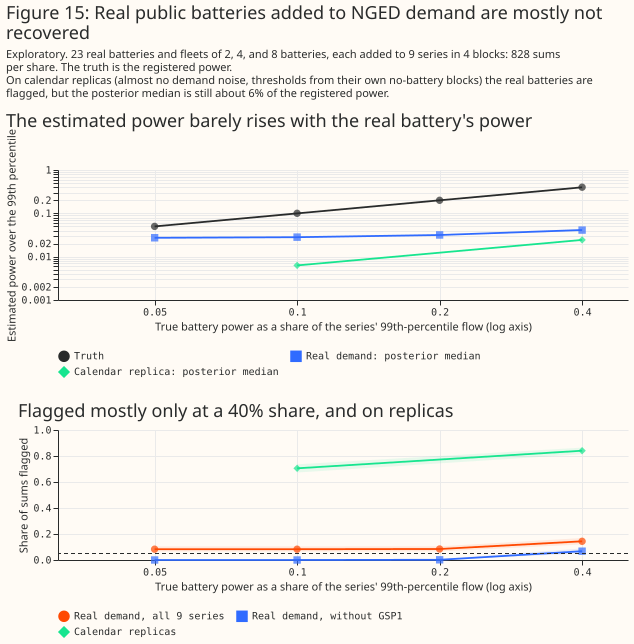
NGED battery A is not detected inside its bulk supply point
NGED battery A is not detected in the flow of BSP1 at any multiple of its metered output up to 11. The log Bayes factor stays between -5.0 and -3.2, below the threshold of -2.7, and 0 of 20 blocks are flagged, including the matched null with the battery's metered output added back (multiple 0). The threshold is the 95th percentile of the other series' null blocks, because BSP1 has none. The matched null is a null only if BSP1's meter captures the battery fully: the half-hour changes of NGED battery A and of BSP1 correlate at -0.29 at lag 0 and at +0.13 at lags of one half-hour either way. At 11 times its output the battery is 35.5% of BSP1's 99th-percentile flow and about 6 noise units. At that size 56% of in-family sums and 45% of rank-rule sums are flagged in rungs 1 and 1b, so the non-detection is informative. The posterior median power lies between 0.7 and 1.8 times the battery's metered 99th-percentile output at every multiple, against a truth of 0 to 11 times. The result is for one site.
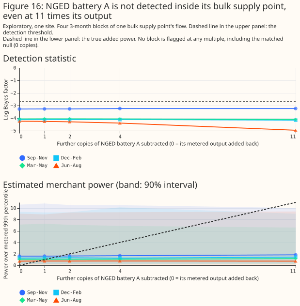
The screen of the eight primaries cannot find a battery
The 13-set screen asks whether the real template set (the schedules a battery would follow) ranks first among 13 sets, and it does for none of the eight primaries. The 12 other sets are control copies: a copy with the tariff windows or the prices moved to the wrong times should fit a primary no better than the real set unless a battery follows the real times. The 12 control sets move the tariff windows by 1 to 3 hours in either direction and take the prices from 6 other weeks. The control sets are not exchangeable with the real set, so 1 in 13 is not the chance rate. Run on 54 simulated lanes, the real set ranks first in 1 (1.9%), no more often than 1 in 13 (7.7%), so the 13-set screen cannot tell a battery from none. A price-only screen, added after the first review, finds simulated batteries but ranks no primary first. The price-only screen, added after the first review, is post hoc. That screen compares the real set with its 6 price-shifted rivals alone. It ranks the real set first in 53 of 54 simulated merchant lanes, in 0 of 9 lanes with no battery (95% interval 0% to 34%), and in 30 of 36 lanes holding a real public battery at a 40% share. By that screen no primary of the eight ranks first. S7, which the register lists with no connected storage, ranks second of 7, and S1 and S2, the two primaries the register lists with connected storage, rank fifth and third. The table gives each primary's result, and whether NGED's register lists connected storage of 50 kW or more at the primary.
| Primary | Rank of the real set among 13 | Rank among the 7 price-differing sets | Register |
|---|---|---|---|
| S1 | 8 | 5 | connected storage |
| S2 | 6 | 3 | connected storage |
| S3 | 9 | 6 | no storage |
| S4 | 6 | 3 | no storage |
| S5 | 6 | 3 | no storage |
| S6 | 7 | 4 | no storage |
| S7 | 5 | 2 | no storage |
| S8 | 6 | 3 | accepted storage |
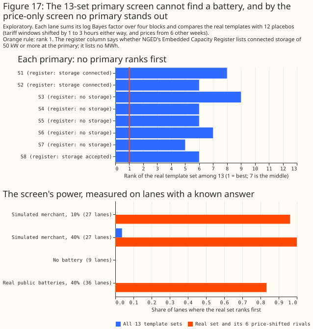
The grid estimator's intervals are too narrow, and the differentiable estimator's are not
The grid estimator places the duration and the efficiency on a fixed grid, and its intervals miss the truth when the truth lies between grid points. On the same 756 rung 1 sums, its 90% power interval holds the truth in 11.1% of sums at a 40% share, against 99.1% for the differentiable estimator. The grid estimator's own positive control failed. Its medians are no more accurate than the differentiable estimator's: the mean difference in absolute relative power error (differentiable minus grid) is +0.04 (95% interval -0.03 to +0.14).
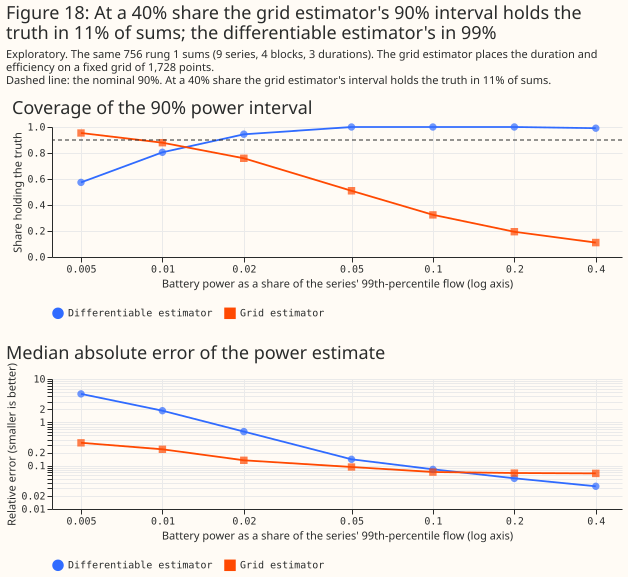
A wider prior gives the same verdicts
The second setting gives the same verdicts. The second setting doubles the spread of the duration priors and widens the efficiency prior. C1 is 3 of 36 again, all GSP1's, and C2 pooled is 67.2% (power, 90% interval). C3 is -0.39 (-0.45 to -0.33), and C4 is -0.70 (-0.86 to -0.54). In-family sums are flagged in 16%, 52%, and 94% at shares of 5%, 10%, and 20%, against 18%, 58%, and 94% in the main setting.
Limitations
The scripts have had one diff review, the page has had two science reviews, and a mutation pass strengthened the tests of the battery templates and the template posterior. Three readers who knew none of the study's terms and a prose review checked the page for clarity.
An earlier positive control is not an independent test. The first control failed when the battery's schedule was itself fitted. The fine linear-programme stack was then refined until the control passed, using diagnostics from a scored block, so that pass was not independent. The clean control replaces it, with a rule fixed before the run, on 7 series no diagnostic had touched. The first control had passed in 2 of 3 scored blocks, on one truth near a node of the stack.
Removing the two series used for tuning lowers the in-family detection rate at a 10% share from 58% to 51%. Tuning used S6 in September to November and S2 in all blocks only. Removing S2 and S6 also changes the 90% power coverage from 90% to 89%. The 90% and 89% are pooled over all seven shares, including the shares of 2% and below where coverage is 57% to 94%. The 100% in the in-family section is at shares of 5% to 20% only, so the 100% and the 90% are both right.
The thresholds rest on 36 no-battery blocks from one year, and one series false-alarms. GSP1's no-battery blocks score above the threshold from the other series in three of four blocks. Rebuilding the thresholds without GSP1 flags 4 of the other 32 blocks.
The estimator reports a power where none exists. With no battery added, the posterior median merchant power is 2.6% of the 99th-percentile flow, and an unidentified power returns the prior's scale (20% of the 99th-percentile flow) and not zero, so the fixed-window classes of a fleet sit at 79% to 95% of that scale.
Other limits.
- The half-normal prior for a class's power scales with the 99th percentile of the flow series including the battery, so at large shares the battery widens its own prior.
- The energy reference for a real battery is a lower bound on its capacity.
- The simulated batteries follow a perfect-foresight daily linear programme. Real batteries also earn from frequency response, the Balancing Mechanism, and intraday trading, none of which the estimator represents.
- The 90% intervals are conservative on real demand and too narrow on calendar replicas, because the tempering by the residual's autocorrelation sets their width and not the data.
- The domestic durations and the red band are unverified, and the definition of "Disaggregated Demand" is unverified.
- Pooled rates and coverages carry Clopper-Pearson intervals that treat sums as independent.
- The false-alarm test of planned contrast C1 rejects only at 5 or more flags in 36 blocks.
What is not tested. A real domestic fleet (the study found no metered one), electric-vehicle chargers on the same tariff edges, the 4-hour availability blocks of frequency services, a battery behind the meter, a primary metered in MVA, a primary outside NGED's East Midlands licence area, a year other than September 2025 to August 2026, and whether MWh is identified separately from MW for any real battery.
Scope
The page covers 9 demand-like series from one year and says nothing about other electricity networks. The page answers how well the half-hourly flow reveals a battery under the estimator described, and does not estimate how much storage NGED's primaries hold.
Data and code availability
The prices and the public batteries' outputs are public. Contains Balancing Mechanism Reporting
Service (BMRS) data © Elexon Limited, copyright and database right 2026. The N2EX day-ahead prices
are National Energy System Operator (NESO) data under the NESO Open Data Licence, and the East
Midlands Agile rates come from Octopus Energy's public API. NGED's primary and bulk supply point
telemetry and the Embedded Capacity Register extract are private, and no generator's name,
identifier, or coordinates appear on this page. The scripts are in
studies/unmetered_battery_capacity/, the shared machinery is in packages/studies/src/studies/,
and the results are under data/studies/per_study/unmetered_battery_capacity/, which are not
committed. The estimator runs on PyTorch with a Triton kernel on one RTX A6000.
Reproducing the figures
Set OMP_NUM_THREADS=2 for each command, and run the stack builds with OMP_NUM_THREADS=1.
uv run python studies/market_downloads/fetch_agile.py
uv run python studies/unmetered_battery_capacity/convert_register.py
uv run python studies/unmetered_battery_capacity/capacity_inputs.py
uv run python studies/unmetered_battery_capacity/capacity_stacks.py
uv run python studies/unmetered_battery_capacity/capacity_stacks.py coarse
uv run python studies/unmetered_battery_capacity/capacity_templates.py
uv run python studies/unmetered_battery_capacity/capacity_positive_control_clean.py
uv run python studies/unmetered_battery_capacity/capacity_rung1.py
uv run python studies/unmetered_battery_capacity/capacity_rung1b.py
uv run python studies/unmetered_battery_capacity/capacity_rung2.py
uv run python studies/unmetered_battery_capacity/capacity_rung3.py
uv run python studies/unmetered_battery_capacity/capacity_rung3_replica.py
uv run python studies/unmetered_battery_capacity/capacity_rung4.py
uv run python studies/unmetered_battery_capacity/capacity_rung5.py
uv run python studies/unmetered_battery_capacity/capacity_screen_power.py
uv run python studies/unmetered_battery_capacity/capacity_sensitivity.py
uv run python studies/unmetered_battery_capacity/capacity_grid_comparison.py
uv run python studies/unmetered_battery_capacity/capacity_report.py
uv run python studies/unmetered_battery_capacity/capacity_charts_data.py
uv run python studies/unmetered_battery_capacity/capacity_charts_explainers.py
uv run python studies/unmetered_battery_capacity/capacity_charts_results.py
The numbers that the figure scripts derive are written to report_figures_explainers.md and
report_figures_results.md beside the report. The helper modules capacity_inputs.py,
capacity_runs.py, and capacity_report_tools.py hold shared code and are not run on their own.